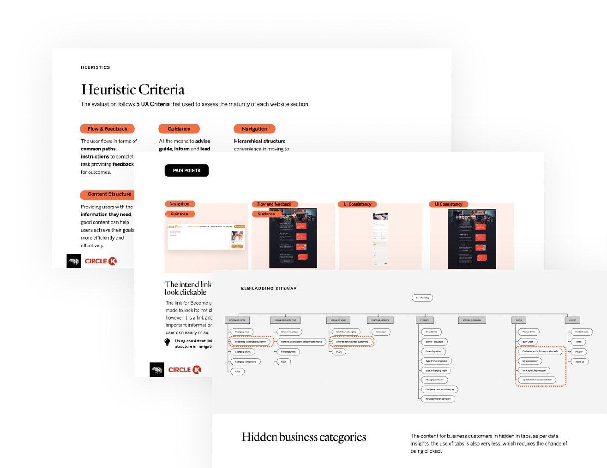
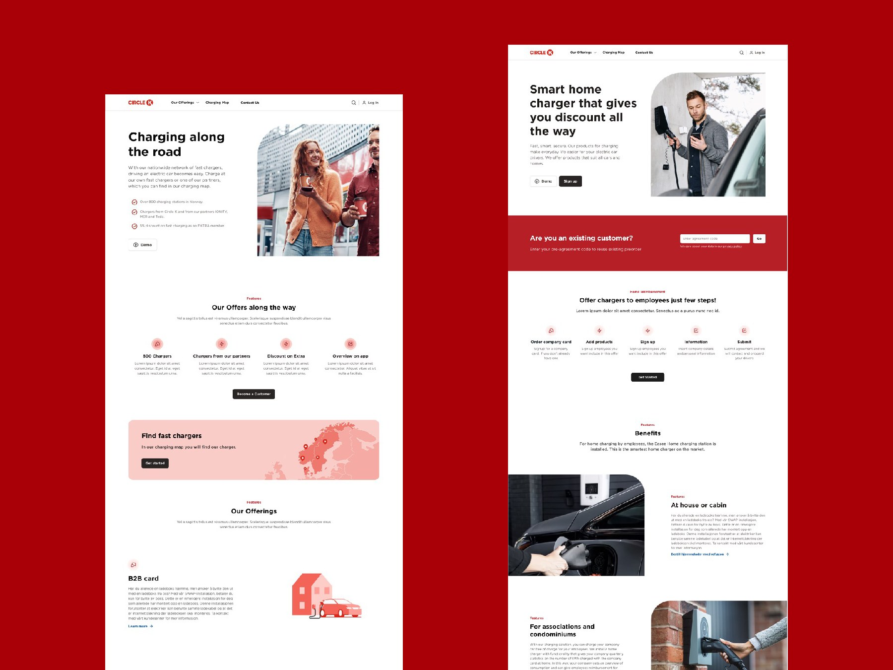
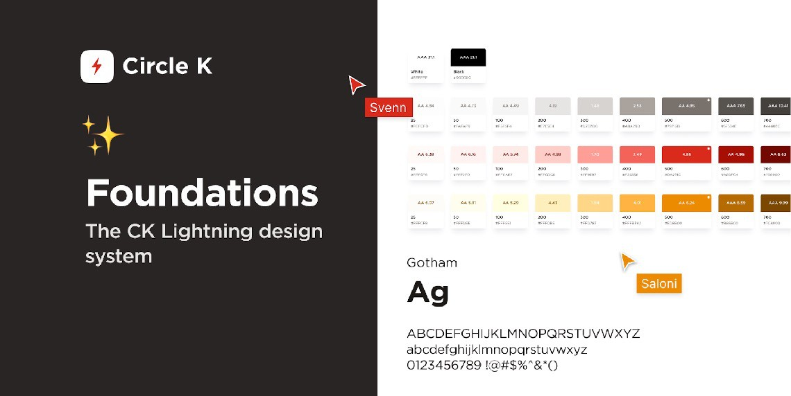
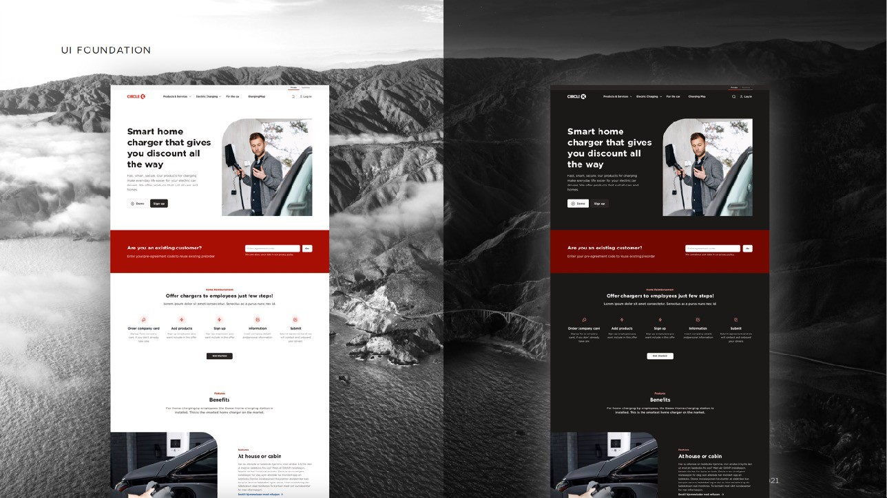

Circle K
Home Charging Research & Scalable Design System
Research into how customers experience EV home charging and B2B ordering at Circle K, and the evolution of the design system behind its web and mobile products.
Working with product, marketing and development teams, I led the user research and helped turn the findings into clearer flows and a more scalable, accessible foundation.
Background
Circle K wanted to improve the digital experience for its EV home charging customers and B2B users. Usability gaps, inconsistent experiences and fragmented design patterns were getting in the way across platforms.
There were two sides to the challenge: understanding customer needs better, and evolving the digital ecosystem into something more scalable, accessible and aligned with the brand across web and mobile.
How might we better understand home charging customers while evolving a digital ecosystem that can scale across web and mobile?

Process
Research and evaluation. I used user research, heuristic evaluations and usability testing to uncover customer pain points and find opportunities for improvement. I led the research initiatives and synthesised the findings with the wider team.
Workshops and validation. The insights fed into ideation workshops and strategic recommendations. I facilitated the workshops and validated concepts through usability testing, including UX analysis and validation to streamline B2B order flows and improve the overall web experience.

Design system
Alongside the research, I played a key role in evolving the design system across web and mobile. I designed and maintained reusable UI components and patterns, and created scalable foundations for future product growth.
The work also aligned interfaces with Circle K’s updated branding and visual identity, supported dark mode and accessibility improvements, and added responsive patterns, so that teams and products could stay consistent as they grew.


Results
The work delivered customer insights that helped prioritise improvements to the home charging experience and B2B digital flows.
The evolving design system gave Circle K a stronger foundation for scalable product development and improved collaboration between cross-functional teams. It also enabled more consistent, accessible and user-friendly experiences across its digital platforms.